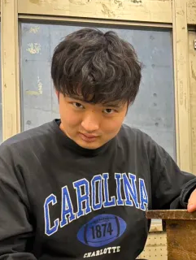
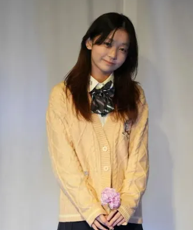
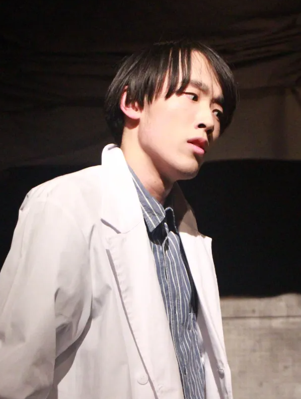
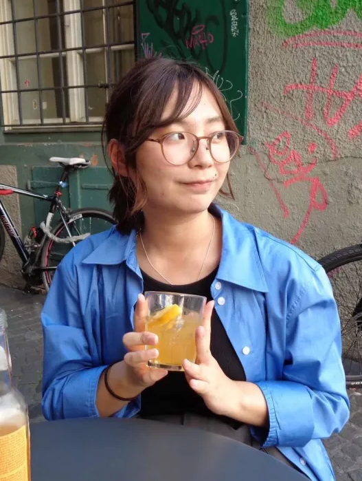
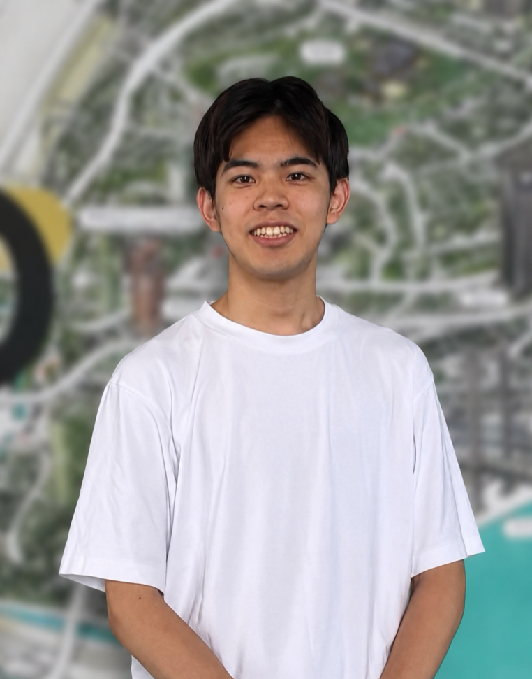

Members
運営メンバー
EnTRoPy
宮川 久
慶應義塾大学環境情報学部 在学中。中学2年のときに演劇に出会い、バスケットボール部から転部して活動を始めた。高校2年時には県代表として東京「シアター1010」の舞台に立ち、他県の強豪校の作品に触れたことで、表現の自由さや舞台のあり方の多用性に強く惹かれる。
大学進学後もさまざまな舞台を観る中で、「この面白さに触れる入口を、もっと増やせたら」という想いが強くなり、Stage Link を立ち上げる。演劇の魅力が自然に伝わり、初めての人でも一歩踏み出しやすい場をつくることを目指して運営している。
現在は主に劇団EnTRoPy 所属。第11回全国学生演劇祭実行委員。大学では演劇とは全く関係のない、航空データ解析・航空気象を研究している。

創造工房
柳町 聖和
慶應義塾大学経済学部 在学中。大学の最初の半年まで野球をしており、演劇などの創作物に触れる機会は希薄だった。
怪我などで選手としてプレーし続けることに疑問を持っている中で、創像工房に出あい、演劇に触れるようになる。定性的なものをどのように面白さや美しさに繋げていくのか考えていく中で、演劇に熱中するようになり現在に至る。
より多くの交流と技術交換が各々の演劇の幅を広げ、より演劇を楽しめるようになるという考えから、Stage linkに携わるようになる。
現在は創像工房に属し役者をこなしながら、自身の目標に邁進している。
川島 帆乃花
創造工房

オウ カキ
EnTRoPy
加治屋 栞
EnTRoPy

岡田 奈和実
創造工房
Air
鳥取大学演劇サークル
片桐 野々香
EnTRoPy

白鳥 晃路
創造工房

矢口 航基
Web開発